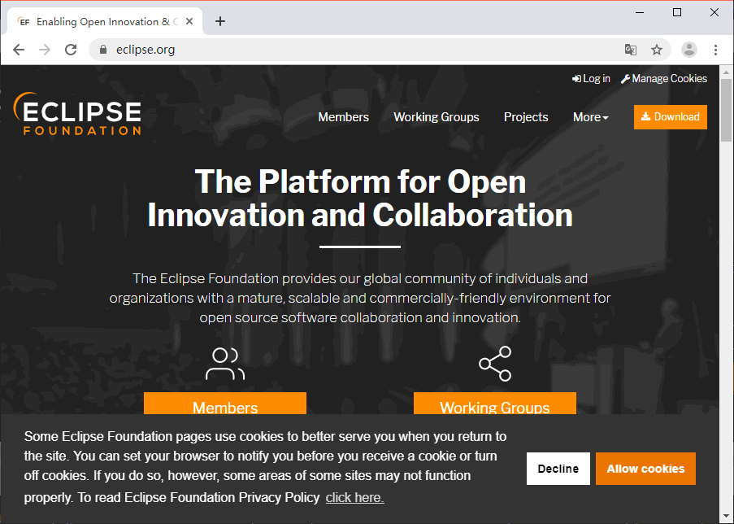
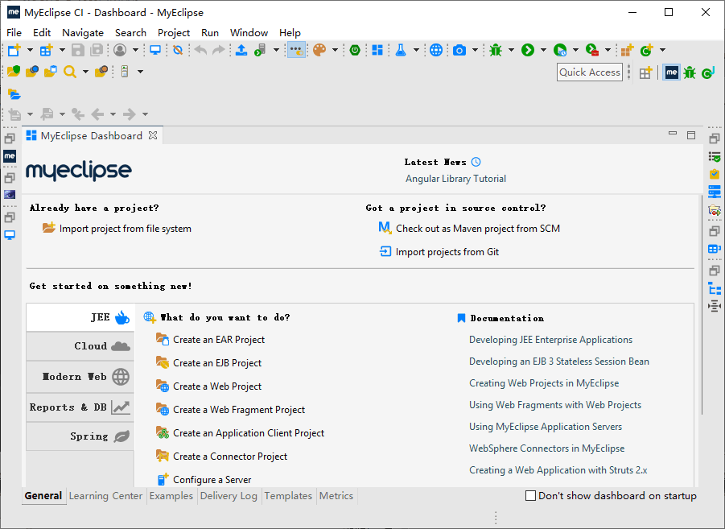
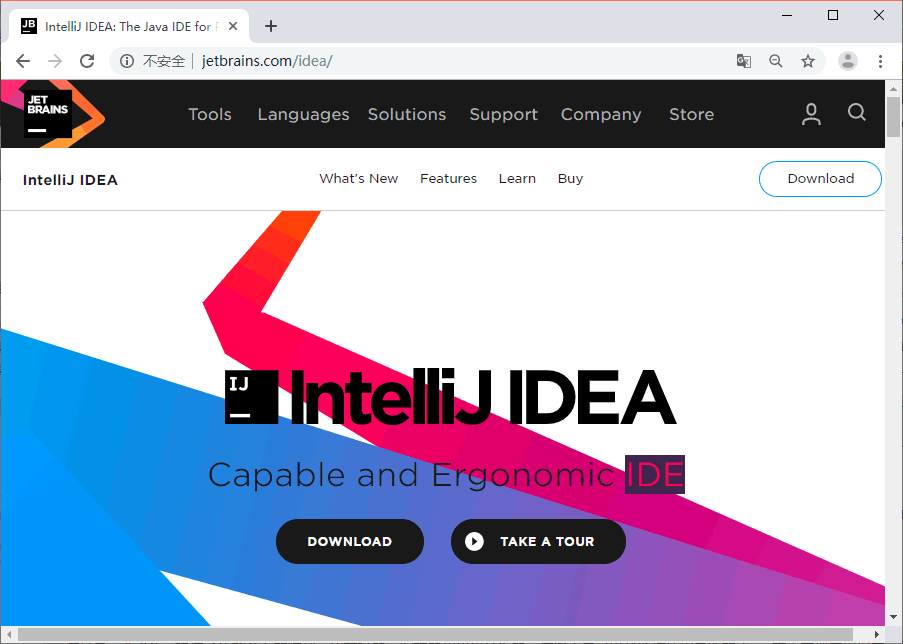

首页 > Java教程 > Java入门基础及环境搭建
Java常用开发工具有哪些？
本节介绍一下 Java 常用的几个开发工具。下面这些工具或许功能和作用不同，但是有着一个共同的主旨，那就是——它们都是为了给 Java 编码和开发提供卓越的支持。
所以学习开发时一般我们不会选用这些简单文本编辑工具。我们一般会选用一些功能比较强大的类似记事本的工具，比如： Notepad++、Sublime Text、editplus、ultraedit、vim 等。下面我们分别具体介绍一下它们的优缺点，方便大家找到适合自己开发工具。
大家可以点击文中蓝色的工具名称，直接进入官网下载。
Notepad++ 优点：
Notepad++ 缺点：

Notepad++
EditPlus 优点：
EditPlus 缺点：
EditPlus
UltraEdit 优点：
UltraEdit 缺点：

UltraEdit
它是一款收费软件，但是可以无限期试用，它是一个跨平台的编辑器，同时支持 Windows、Linux、Mac OS X 等操作系统。
Sublime Text 优点：
Sublime Text
Vim 优点：
Vim 缺点：

Vim
所谓集成 IDE 就是把代码的编写、调试、编译、执行都集成到一个工具中了，不用单独在为每个环节使用工具。
Eclipse 优点：
Eclipse 缺点：
因 MyEclipse 属于收费软件，所以大公司很少使用。
据传它有“最智慧的 Java ide”之称。它能帮助开发人员拿出最具有创造性的解决方案。它的“Smart Code Completion”和“On-the-fly Code Analysis”功能等可以提高开发人员的工作效率，并且还提供了对 web 和移动开发高级支持。
IDEA 缺点：
NetBeans IDE 目前支持 PHP、Ruby、JavaScript、Ajax、Groovy、Grails 和 C/C ++ 等开发语言。
NetBeans 是甲骨文公司生产的 IDE，在其中也内置了许多功能，相对于 idea 和 Eclipse 市场还是较少的。
NetBeans 提供了功能全面的阵列。如转换器，编辑器和代码分析器，这些工具可以帮助你使用最新的 Java 技术实现应用程序。工具范围相当广泛，而且 IDE 背后的团队也在不断地改进。此外你还可以得到静态分析工具的帮助——编写出无 bug 的代码。

图 5 NetBeans
在使用这些开发工具之前，我们最好能熟知这些软件的优点和缺点，以便根据实际情况选择应用。编程工具只是工具，为了方便人们工作而开发的，各有特点，因此，选工具主要的依据自己将要从事的领域是什么，而不是盲目的认为那种工具好，那种工具不好。看完这篇文章后希望大家都能找到自己合适的 Java 开发工具。
常用源码编辑工具介绍
Java 源代码本质上其实就是普通的文本文件，所以理论上来说任何可以编辑文本文件的编辑器都可以作为我们的 Java 代码编辑工具。比如：Windows 记事本，Mac OS X 下的文本编辑，Linux 下的 vi、emacs、gedit、DOS 下的 edit 等。但是这些简单工具没有语法的高亮提示、自动完成等功能，这些功能的缺失会大大降低代码的编写效率。所以学习开发时一般我们不会选用这些简单文本编辑工具。我们一般会选用一些功能比较强大的类似记事本的工具，比如： Notepad++、Sublime Text、editplus、ultraedit、vim 等。下面我们分别具体介绍一下它们的优缺点，方便大家找到适合自己开发工具。
大家可以点击文中蓝色的工具名称，直接进入官网下载。
1）Notepad++
Notepad++ 是 Windows 操作系统下的一套文本编辑器，有完整的中文化接口及支持多国语言编写的功能（UTF8 技术）。Notepad++ 优点：
- 功能比 Windows 中的 Notepad（记事本）强大，除了可以用来制作一般的纯文字说明文件，也十分适合编写计算机程序代码。
- 不仅有语法高亮度显示，也有语法折叠功能，并且支持宏以及扩充基本功能的外挂模组。
- 是免费软件，可以免费使用，自带中文，支持所有主流的计算机程序语言。
Notepad++ 缺点：
- 比起专用的 IDE 缺少语法检查，颜色选取，代码的 outline，注释的解析，TODO，调试工具集成，部署工具集成等等好多功能。
- 打开大文件比较慢
Notepad++
2）EditPlus
EditPlus 是一款由韩国 Sangil Kim （ES-Computing）出品的小巧但是功能强大的可处理文本、HTML 和程序语言的 Windows 编辑器，甚至可以通过设置用户工具将其作为 C，Java，Php 等等语言的一个简单的 IDE。EditPlus 优点：
- EditPlus 界面简洁美观，且启动速度快。
- 对中文支持比较好。
- 支持多种日期、时间输入；支持语法高亮；支持代码折叠；支持代码自动完成。
- 配置功能强大，且比较容易，扩展也比较强。
- 适合编辑网页。
EditPlus 缺点：
- 不支持代码提示功能。
- 不免费，收费单位美元，注册费用高
- 功能较简单。
- 版本更新比较慢。
EditPlus
3）UltraEdit
UltraEdit 是一套功能强大的文本编辑器，可以编辑文本、十六进制、ASCII 码，完全可以取代记事本，它是一款需要花费 49.95 美元的共享软件。UltraEdit 优点：
- 提供了友好界面的编程编辑器，支持语法高亮，代码折叠和宏。
- 内置了对于 HTML、PHP 和 JavaScript 等语法的支持，可同时编辑多个文件，而且即使开启很大的文件速度也不会慢。
UltraEdit 缺点：
- 启动速度较慢。
- 默认的设置中不支持 Pascal 语言。
- 对中文支持不是很好。
UltraEdit
4）Sublime Text
Sublime Text 是由程序员 Jon Skinner 于 2008 年 1 月份所开发出来，它最初被设计为一个具有丰富扩展功能的 Vim。它是一款收费软件，但是可以无限期试用，它是一个跨平台的编辑器，同时支持 Windows、Linux、Mac OS X 等操作系统。
Sublime Text 优点：
- 主流前端开发编辑器
- 体积较小，运行速度快
- 文本功能强大
- 支持编译功能且可在控制台看到输出
Sublime Text
5）Vim
Vim 是从 Vi 发展出来的一个文本编辑器。代码补全、编译及错误跳转等方便编程的功能特别丰富，在程序员中被广泛使用。是 Unix 系统用户最喜欢的文本编辑器。Vim 优点：
- 支持多种操作系统
- 打开大文件速度较快，在大文件中查找的速度也非常快。
- 免费，开源
- 有搜索高亮功能
- 支持多中编辑语言
- 功能强大
Vim 缺点：
- 比较难学
- 虽然有菜单，但 Windows 用户第一次上手会很难
- 界面不太好看
- 键盘命令多，必须长期使用才能熟练。
Vim
集成开发工具介绍
Java 初学者为了能更好的掌握 Java 代码的编写，我们一般会选用一款高级记事本类的工具作为开发工具， 而实际项目开发时，更多的还是选用集成 IDE 做为开发工具，比如当下最流行的两款工具：Eclipse、IDEA。所谓集成 IDE 就是把代码的编写、调试、编译、执行都集成到一个工具中了，不用单独在为每个环节使用工具。
1）Eclipse IDE
Eclipse 是一个开放源码的项目，是著名的跨平台的自由集成开发环境（IDE），最初主要用来 Java 语言开发，后来通过安装不同的插件 Eclipse 可以支持不同的计算机语言，比如 C++ 和 Python 等开发工具。Eclipse 优点：
- 能提供关于代码完成、重构和语法检查这些急需的帮助。
- 能提供 JDT 的一系列工具，包括各种插件工具来帮助开发各种 Java 应用。
- 允许开发人员使用不同的语言支持，如它也可以提供 C/C++ 和 PHP 的 IDE。这使得它成为了 Java 开发的一个一站式资源。
- Eclipse 是免费的，这点很重要，所以大多公司里依然是使用 Eclipse 这款 IDE，而且它良好的性能，也在市场占着不小的比重。
Eclipse 缺点：
- 版本间不兼容，特别是插件，在一个版本下可以很好工作，在另一个版本下就完全无法工作，就算两个版本的版本号只有微小的差异。
- 与 JDK 捆绑过于紧密。当 JDK 新的版本出来后，Eclipse 一般要滞后很长一段时间才有一个新版本支持新的 JDK，然后等各个插件能在新版本的 Eclipse 下使用又要过很长时间。

图 2 Eclipse
图 2 Eclipse
2）MyEclipse
MyEclipse 是同 Eclipse 一个公司的，在功能上增加了不少，相对于 Eclipse 来说，MyEclipse 更像将 Eclipse 中好多插件都集成起来了，当然，性能上面也有更好的考虑，不过这款 IDE 是收费的。因 MyEclipse 属于收费软件，所以大公司很少使用。

图 3 MyEclipse
图 3 MyEclipse
3）Intellij IDEA
Intellij IDEA 简称 IDEA，具有美观，高效等众多特点。IDEA 是 JetBrains 公司的产品，这家公司总部位于捷克共和国的首都布拉格，开发人员以严谨著称的东欧程序员为主。它的旗舰版本还支持 HTML，CSS，PHP，MySQL，Python 等。免费版只支持 Java 等少数语言。据传它有“最智慧的 Java ide”之称。它能帮助开发人员拿出最具有创造性的解决方案。它的“Smart Code Completion”和“On-the-fly Code Analysis”功能等可以提高开发人员的工作效率，并且还提供了对 web 和移动开发高级支持。
IDEA 缺点：
- 编辑超大文件不靠谱，易卡顿或直接卡死。
- 相对于一些专用工具，显得不够专业：比如批量修改项目中的文件编码效果就很差劲。
- 消耗大量硬件资源，IntelliJ IDEA 要求内存大，并且还要用的流畅还需要固态硬盘辅助。比如在做微服务类的项目的时候，一般需要同时启动多个项目，内存一会就上来的，8G 内存完全不够用的。

图 4 Intellij IDEA
图 4 Intellij IDEA
4）NetBeans
NetBeans 是业界第一款支持创新型 Java 开发的开放源码 IDE。开发人员可以利用业界强大的开发工具来构建桌面、Web 或移动应用。同时，通过 NetBeans 和开放的 API 的模块化结构，第三方能够非常轻松地扩展或集成 NetBeans 平台。NetBeans IDE 目前支持 PHP、Ruby、JavaScript、Ajax、Groovy、Grails 和 C/C ++ 等开发语言。
NetBeans 是甲骨文公司生产的 IDE，在其中也内置了许多功能，相对于 idea 和 Eclipse 市场还是较少的。
NetBeans 提供了功能全面的阵列。如转换器，编辑器和代码分析器，这些工具可以帮助你使用最新的 Java 技术实现应用程序。工具范围相当广泛，而且 IDE 背后的团队也在不断地改进。此外你还可以得到静态分析工具的帮助——编写出无 bug 的代码。
图 5 NetBeans
在使用这些开发工具之前，我们最好能熟知这些软件的优点和缺点，以便根据实际情况选择应用。编程工具只是工具，为了方便人们工作而开发的，各有特点，因此，选工具主要的依据自己将要从事的领域是什么，而不是盲目的认为那种工具好，那种工具不好。看完这篇文章后希望大家都能找到自己合适的 Java 开发工具。
关注公众号「站长严长生」，在手机上阅读所有教程，随时随地都能学习。内含一款搜索神器，免费下载全网书籍和视频。

微信扫码关注公众号